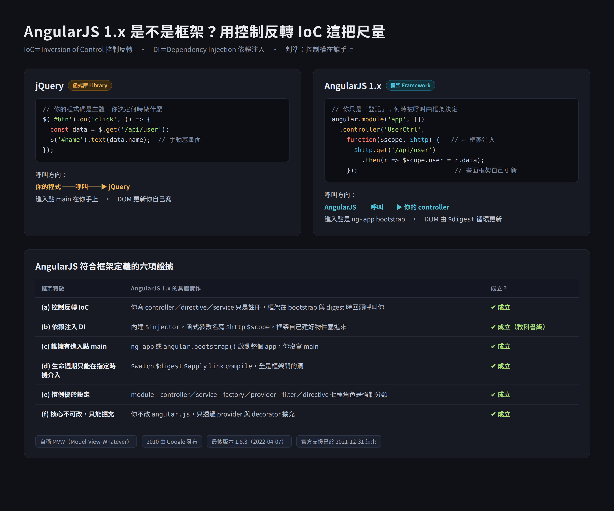

本篇重點 (a)–(g)，共 7 個。 名詞先攤開：IoC（Inversion of Control，控制反轉）、API（Application Programming Interface，應用程式介面）、DI（Dependency Injection，依賴注入）、OOP（Object-Oriented Programming，物件導向程式設計）。
程序編程（Procedural Programming，或譯程序式程式設計）是一種以「程序呼叫（Procedure Call）」為核心的程式設計範式（Paradigm）。程式的組成單位是一連串可被呼叫的程序、函數或子程序（Functions／Subroutines），而不是物件或宣告式的規則。
代表語言：C、Pascal、Fortran、早期的 BASIC；JavaScript 與 Python 也完全可以用程序式風格來寫。
程式碼由一系列依序執行的指令組成，明確地告訴電腦「步驟一做什麼、步驟二做什麼、步驟三做什麼」。這是 Imperative（命令式）的表現，跟 SQL、HTML 這類 Declarative（宣告式）只描述「我要什麼結果」形成對比。
由開發者撰寫的主程式（例如 main() 函數）主導整個執行流程。當需要執行通用任務（格式化字串、計算數據、繪圖）時，主程式主動呼叫外部函式庫，函式庫處理完畢並傳回結果後，主程式再繼續下一步。
這一點就是判斷「有沒有發生控制反轉」的支點。
程序編程通常把資料結構（Data）與操作資料的函數（Functions）分開處理，透過把資料當作參數傳入函數運算。這跟 OOP 把「資料 + 操作」封裝在同一個物件裡的作法正好相反，也是為什麼 OOP 常被視為程序編程之後的下一個階段。
| 面向 | 程序編程 Procedural | 控制反轉 IoC |
|---|---|---|
| 呼叫方向 | 你的程式 → 呼叫 → 函式庫 | 框架 → 呼叫 → 你的程式 |
誰握有 main |
你 | 框架的 CLI／runtime |
| 你寫的東西是 | 主體 | 被插進去的零件 |
| 英文口訣 | Your code calls the library | Framework calls your code |
| 介入時機 | 你想呼叫就呼叫 | 只能在框架允許的擴充點 |

上圖左半就是 (c) 描述的程序式呼叫（jQuery：你的程式呼叫它、進入點 main 在你手上），右半則是控制反轉（AngularJS：你只是登記 controller，何時被呼叫由框架決定）。
Don't call us, we'll call you（別打給我們，我們會打給你）。這是 IoC 的口語版本，也是最好背的一句面試答案：
Wikipedia 對 IoC 的敘述提到「inversion 是歷史性的用詞」——意思是這個「反轉」是相對於當年主流的程序式寫法而言的反轉，不是絕對意義上的顛倒。在 1980 年代之前，程式碼呼叫函式庫是預設樣貌，所以框架出現時才被形容成「控制流被反轉了」。今天如果你是從 React／Angular 開始學程式，你甚至會覺得框架呼叫你才是常態，這時候「反轉」反而不直覺——理解這個詞的歷史背景可以避免混淆。
main() 函數的控制權在框架手上。 → ✘ 錯。程序編程的 main 在開發者手上，框架接手才叫控制反轉。請用「呼叫方向」這一個判準，解釋為什麼 Express 通常被歸類為輕量框架而不是函式庫。
→ 因為 app.get('/path', handler) 這個寫法，你並沒有主動呼叫 Express 去處理請求，而是把 handler 註冊進去，等 HTTP 請求進來時由 Express 回頭呼叫你的 handler。呼叫方向是「Express → 你的程式」，符合控制反轉，因此歸類為框架。反觀 Axios 這類函式庫，是你在需要時主動 axios.get()，方向是「你的程式 → 函式庫」。
main() 函數）主導整個執行流程，需要執行通用任務時主動呼叫外部函式庫，待函式庫回傳結果後再繼續下一步；三是資料與邏輯分離，通常把資料結構與操作資料的函數分開處理，透過把資料作為參數傳入函數運算。與控制反轉的對比：程序編程是「你的程式碼主動呼叫函式庫」（Your code calls the library），控制反轉則是由框架掌控全局，變成「框架主動呼叫你的程式碼」（Framework calls your code），也就是俗稱的「好萊塢原則」（Don't call us, we'll call you）。| 主題 | 連結 | 版本／時間 |
|---|---|---|
| Gemini 對話原文 | https://gemini.google.com/app/810b5871d90afef6 | 對話日期 2026-08-06 |
| Procedural programming 定義（範式、程序呼叫、與 OOP 的關係） | https://en.wikipedia.org/wiki/Procedural_programming | 查證日 2026-08-06 |
| Inversion of Control 定義與「歷史性用詞」敘述 | https://en.wikipedia.org/wiki/Inversion_of_control | 查證日 2026-08-06 |
| Martin Fowler, InversionOfControl（經典出處，延伸閱讀） | https://martinfowler.com/bliki/InversionOfControl.html | 未抓取原文，僅供自行查閱 |
本次 Gemini 的回答與 Wikipedia 的定義一致，未發現錯誤或杜撰。唯一要留意的是 Gemini 把「好萊塢原則」寫成「俗稱」，嚴格說它是 Richard Sweet 於 1983 年在 Mesa 專案文件中提出、後由 John Vlissides 推廣的設計原則，不只是俗稱。